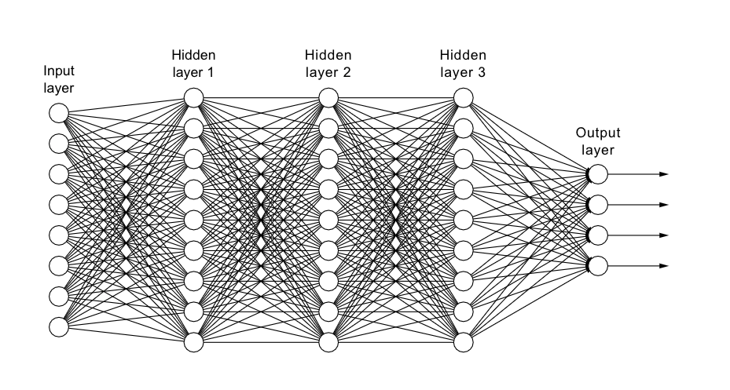

import numpy as np
def sigmoid(X):
"""
Compute the sigmoid activation for the input.
"""
return 1 / (1 + np.exp(-X))
def sigmoid_dev(X):
"""
The analytical derivative of sigmoid function at X.
"""
return sigmoid(X) * (1 - sigmoid(X))
def softmax(scores):
"""
Compute softmax scores given the raw output from the model.
Returns softmax probabilities (N, num_classes).
"""
numer = np.exp(scores - scores.max(axis=1, keepdims=True))
denom = numer.sum(axis=1, keepdims=True)
return np.divide(numer, denom)
def cross_entropy_loss(ypred, yactual):
"""
Compute Cross-Entropy Loss based on prediction of the network and labels
"""
yactual = np.asarray(yactual)
ypred = ypred[np.arange(len(yactual)), yactual]
return -np.mean(np.log(ypred))
def compute_accuracy(ypred, yactual):
"""
Compute the accuracy of current batch.
"""
yactual = np.asarray(yactual)
yhat = np.argmax(ypred, axis=1)
return (y == yhat).sum() / y.shape[0]Backpropagation is a key algorithm used in training fully connected neural networks, also known as feed-forward neural networks. In this algorithm, the network’s output error is propagated backward, layer by layer, to adjust the weights of connections between neurons.

The process starts by comparing the network’s output to the desired output, calculating the error. Then, starting from the output layer and moving backward, the algorithm computes the gradients of the error with respect to each weight in the network using the chain rule of calculus. These gradients indicate how much each weight contributes to the error.
Next, the weights are updated using gradient descent, where they are adjusted in the direction that minimizes the error. This adjustment is proportional to the gradient and a predefined learning rate, ensuring the network converges towards a solution. Backpropagation continues iteratively over the training data until the network’s performance reaches a satisfactory level or a predetermined number of iterations is reached.
Overall, backpropagation efficiently adjusts the weights of a fully connected network, enabling it to learn complex relationships between input and output data through iterative optimization of the network’s parameters.
In what follows, we walkthrough the mathematics and pseudocode required to train a 2-layer fully connected network for a classification task.
Forward Pass
In the following, superscripts represent the layer associated with each variable:
\(X = A^{(0)}\): Input data having dimension n-by-f, where n is the number of samples and f the number of features. For a batch of 32 MNIST samples, \(X\) would have dimension (32, 784).
\(y\): Target variable. classifying a single digit from MINST, a vector populated with 0s and 1s indicating the ground truth label for the sample (8 or not 8). Has the same length as the first dimension of \(X\).
\(W^{(l)}\): Trainable weights. Projects previous layer activations to lower dimensional representation. Again referring to the first set of weights for a batch of 32 MNIST samples, \(W^{(1)}\)’s first dimension will match the second dimension of the activations from the previous layer (784), and \(W^{(1)}\)’s second dimension will be some lower dimension, say 256. \(W^{(1)}\) will therefore have dimension (784, 256).
\(b^{(l)}\): Bias term, a one-dimensional vector associated with each hidden layer having length equal to the second dimension of the hidden layer. \(b^{(1)}\) will have dimension (256,).
\(Z^{(l)} = A^{(l-1)} W^{(l)} + b^{(l)}\): Output of layer \(l\), which is the matrix product of the previous layer activations \(A^{(l-1)}\) and current layer weights (plus bias term).
\(A^{(l)} = \sigma(Z^{(l)})\): Activations associated with layer \(l\). Passes \(Z^{(l)}\) through a non-linearity such as sigmoid or ReLU.
More concretely, assume a 2-layer fully-connected neural network with one hidden layer of size 256, through which a dataset of dimension 32-by-784 is passed to predict whether each of the 32 images is an 8 or not. The forward pass looks like:
- Randomly initialize \(W^{(1)}\) (784x256), \(W^{(2)}\) (256x1), \(b^{(1)}\) (256x1) and \(b^{(2)}\) (1x1)
- \(X = A^{(0)}\hspace{.75em}\) (32x784)
- \(Z^{(1)} = A^{(0)} W^{(1)} + b^{(1)}\hspace{.75em}\) (32x256)
- \(A^{1} = \sigma(Z^{(1)})\hspace{.75em}\) (32x256)
- \(Z^{(2)} = A^{(1)} W^{(2)} + b^{(2)}\hspace{.75em}\) (32x1)
- \(\hat{y} = A^{(2)} = \sigma(Z^{(2)})\hspace{.75em}\) (32x1)
The final output, \(\hat{y}\), represents the probability that each sample is the number 8 or not.
With the actual labels \(y\) and our predicted probabilities \(\hat{y}\), we can define our loss function, the cross-entropy loss for binary classification:
\[ \mathcal{L} = -\frac{1}{n}\big(y \times \mathrm{log}(\hat{y}) - (1 - y)\times \mathrm{log}(1 - \hat{y})\big) \]
Backward Pass (Backpropagation)
The goal of backpropagation is to compute the partial derivatives of the loss function \(\mathcal{L}\) with respect to any weight \(W\) or \(b\) in the network. In order to update our weights, we need to take derivatives of \(\mathcal{L}\) w.r.t. \(W\) and \(b\), then update \(W\) and \(b\) using the derivatives. Backpropagation starts by taking the derivative of the loss function. We first compute the derivatives of the loss function w.r.t. \(W^{(2)}\) and \(b^{(2)}\). Here we make use of the chain rule:
\[ \begin{align*} \frac{\partial \mathcal{L}}{\partial W^{(2)}} &= \frac{\partial \mathcal{L}}{\partial A^{(2)}} \cdot \frac{\partial A^{(2)}}{\partial Z^{(2)}} \cdot \frac{\partial Z^{(2)}}{\partial W^{(2)}}\\ \frac{\partial \mathcal{L}}{\partial b^{(2)}} &= \frac{\partial \mathcal{L}}{\partial A^{(2)}} \cdot \frac{\partial A^{(2)}}{\partial Z^{(2)}} \cdot \frac{\partial Z^{(2)}}{\partial b^{(2)}} \end{align*} \]
Once we have \(\frac{\partial \mathcal{L}}{\partial W^{(2)}}\) and \(\frac{\partial \mathcal{L}}{\partial b^{(2)}}\), \(W^{(2)}\) and \(b^{(2)}\) are updated as follows:
\[ \begin{align*} W^{(2)} &:= W^{(2)} - \alpha \cdot \frac{\partial \mathcal{L}}{\partial W^{(2)}}\\ b^{(2)} &:= b^{(2)} - \alpha \cdot \frac{\partial \mathcal{L}}{\partial b^{(2)}} \end{align*} \]
for some learning rate \(\alpha\). This holds for all layers. For given layer \(i\), the update rule for \(W^{(i)}\) and \(b^{(i)}\) is:
\[ \begin{align*} W^{(i)} &:= W^{(i)} - \alpha \cdot \frac{\partial \mathcal{L}}{\partial W^{(i)}}\\ b^{(i)} &:= b^{(i)} - \alpha \cdot \frac{\partial \mathcal{L}}{\partial b^{(i)}}. \end{align*} \]
Let’s start with unpacking \(\frac{\partial \mathcal{L}}{\partial W^{(2)}}\). The first entry on the r.h.s., \(\frac{\partial \mathcal{L}}{\partial A^{(2)}}\), represents the derivative of the loss function w.r.t. \(A^{(2)} = \hat{y}\), which is
\[ \frac{\partial \mathcal{L}}{\partial A^{(2)}} = -\frac{y}{A^{(2)}} + \frac{1 - y}{1 - A^{(2)}}. \]
The second term on the r.h.s., \(\frac{\partial A^{(2)}}{\partial Z^{(2)}}\), is the derivative of the sigmoid activation (\(A^{(2)} = \sigma(Z^{(2)})\)). The derivative of the sigmoid function is given by
\[ \frac{d\sigma}{dx} = \sigma(x)(1-\sigma(x)), \]
therefore \(\frac{\partial A^{(2)}}{\partial Z^{(2)}}\) is given by
\[ \frac{\partial A^{(2)}}{\partial Z^{(2)}} = A^{(2)}(1 - A^{(2)}). \]
For the third term on the r.h.s., \(\frac{\partial Z^{(2)}}{\partial W^{(2)}}\), recall that \(Z^{(2)} = A^{(1)} W^{(2)} + b^{(2)}\). Therefore
\[ \frac{\partial Z^{(2)}}{\partial W^{(2)}} = A^{(1)}. \]
Finally, we have
\[ \begin{align*} \frac{\partial \mathcal{L}}{\partial W^{(2)}} &= \frac{\partial \mathcal{L}}{\partial A^{(2)}} \cdot \frac{\partial A^{(2)}}{\partial Z^{(2)}} \cdot \frac{\partial Z^{(2)}}{\partial W^{(2)}}\\ &= \Big(-\frac{y}{A^{(2)}} + \frac{1 - y}{1 - A^{(2)}}\Big) \cdot \big(A^{(2)}(1 - A^{(2)})\big) \cdot \big(A^{(1)}\big)\\ &= (A^{(2)} - y) \cdot A^{(1)}. \end{align*} \]
As a notational convenience, we define \(\frac{\partial \mathcal{L}}{\partial Z^{(2)}}\):
\[ \frac{\partial \mathcal{L}}{\partial Z^{(2)}} = \frac{\partial \mathcal{L}}{\partial A^{(2)}} \cdot \frac{\partial A^{(2)}}{\partial Z^{(2)}} = (A^{(2)} - y). \]
This way, \(\frac{\partial \mathcal{L}}{\partial W^{(2)}}\) can be expressed as
\[ \frac{\partial \mathcal{L}}{\partial W^{(2)}} = \frac{\partial \mathcal{L}}{\partial Z^{(2)}} \cdot A^{(1)}. \]
We proceed in a similar fashion for \(\frac{\partial \mathcal{L}}{\partial b^{(2)}}\):
\[ \begin{align*} \frac{\partial \mathcal{L}}{\partial b^{(2)}} &= \frac{\partial \mathcal{L}}{\partial A^{(2)}} \cdot \frac{\partial A^{(2)}}{\partial Z^{(2)}} \cdot \frac{\partial Z^{(2)}}{\partial b^{(2)}}\\ &= \frac{\partial \mathcal{L}}{\partial Z^{(2)}} \cdot \frac{\partial Z^{(2)}}{\partial b^{(2)}}\\ &= (A^{(2)} - y), \end{align*} \]
since \(\frac{\partial Z^{(2)}}{\partial b^{(2)}} = 1\).
For the first layer we re-use many of these calculations, but for new terms on the r.h.s., we employ the chain rule in the same way. For reference, restate the terms from the forward pass:
\[ \begin{align*} A^{(0)} &= X\\ Z^{(1)} &= A^{(0)} W^{(1)} + b^{(1)}\\ A^{1} &= \sigma(Z^{(1)})\\ Z^{(2)} &= A^{(1)} W^{(2)} + b^{(2)}\\ A^{(2)} &= \hat{y} = \sigma(Z^{(2)}) \end{align*} \]
We next consider \(\frac{\partial \mathcal{L}}{\partial W^{(1)}}\):
\[ \begin{align*} \frac{\partial \mathcal{L}}{\partial W^{(1)}} &= \frac{\partial \mathcal{L}}{\partial A^{(2)}} \cdot \frac{\partial A^{(2)}}{\partial Z^{(2)}} \cdot \frac{\partial Z^{(2)}}{\partial A^{(1)}} \cdot \frac{\partial A^{(1)}}{\partial Z^{(1)}} \cdot \frac{\partial Z^{(1)}}{\partial W^{(1)}}\\ &= \frac{\partial \mathcal{L}}{\partial Z^{(2)}} \cdot \frac{\partial Z^{(2)}}{\partial A^{(1)}} \cdot \frac{\partial A^{(1)}}{\partial Z^{(1)}} \cdot \frac{\partial Z^{(1)}}{\partial W^{(1)}} \end{align*} \]
Considering each term on the r.h.s:
\[ \begin{align*} \frac{\partial \mathcal{L}}{\partial Z^{(2)}} &= (A^{(2)} - y)\\ \frac{\partial Z^{(2)}}{\partial A^{(1)}} &= W^{(2)}\\ \frac{\partial A^{(1)}}{\partial Z^{(1)}} &= \sigma(Z^{(1)}) (1 - \sigma(Z^{(1)})) = A^{(1)}(1 - A^{(1)})\\ \frac{\partial Z^{(1)}}{\partial W^{(1)}} &= A^{(0)} = X \end{align*} \]
Resulting in:
\[ \begin{align*} \frac{\partial \mathcal{L}}{\partial W^{(1)}} &= (A^{(2)} - y) \cdot W^{(2)} \cdot \big(A^{(1)}(1 - A^{(1)})\big) \cdot A^{(0)}\\ &= \frac{\partial \mathcal{L}}{\partial Z^{(2)}}\cdot W^{(2)} \cdot \big(A^{(1)}(1 - A^{(1)})\big) \cdot A^{(0)}\\ \end{align*} \]
As before, we define \(\frac{\partial \mathcal{L}}{\partial Z^{(1)}}\) as
\[ \frac{\partial \mathcal{L}}{\partial Z^{(1)}} = \frac{\partial \mathcal{L}}{\partial Z^{(2)}}\cdot W^{(2)} \cdot \big(A^{(1)}(1 - A^{(1)})\big), \]
which allows us to write \(\frac{\partial \mathcal{L}}{\partial W^{(1)}}\) as
\[ \frac{\partial \mathcal{L}}{\partial W^{(1)}} = \frac{\partial \mathcal{L}}{\partial Z^{(1)}} \cdot A^{(0)}. \]
Similarly for \(b^{(1)}\):
\[ \begin{align*} \frac{\partial \mathcal{L}}{\partial b^{(1)}} &= \frac{\partial \mathcal{L}}{\partial A^{(2)}} \cdot \frac{\partial A^{(2)}}{\partial Z^{(2)}} \cdot \frac{\partial Z^{(2)}}{\partial A^{(1)}} \cdot \frac{\partial A^{(1)}}{\partial Z^{(1)}} \cdot \frac{\partial Z^{(1)}}{\partial b^{(1)}}\\ &= \frac{\partial \mathcal{L}}{\partial Z^{(2)}} \cdot \frac{\partial Z^{(2)}}{\partial A^{(1)}} \cdot \frac{\partial A^{(1)}}{\partial Z^{(1)}} \cdot \frac{\partial Z^{(1)}}{\partial b^{(1)}}. \end{align*} \]
Considering each term on the r.h.s:
\[ \begin{align*} \frac{\partial \mathcal{L}}{\partial Z^{(2)}} &= (A^{(2)} - y)\\ \frac{\partial Z^{(2)}}{\partial A^{(1)}} &= W^{(2)}\\ \frac{\partial A^{(1)}}{\partial Z^{(1)}} &= \sigma(Z^{(1)}) (1 - \sigma(Z^{(1)})) = A^{(1)}(1 - A^{(1)})\\ \frac{\partial Z^{(1)}}{\partial b^{(1)}} &= 1 \end{align*} \]
Therefore
\[ \begin{align*} \frac{\partial \mathcal{L}}{\partial b^{(1)}} &= (A^{(2)} - y) \cdot W^{(2)} \cdot \big(A^{(1)}(1 - A^{(1)})\big) \cdot 1\\ &= \frac{\partial \mathcal{L}}{\partial Z^{(2)}} \cdot W^{(2)} \cdot \big(A^{(1)}(1 - A^{(1)})\big)\\ &= \frac{\partial \mathcal{L}}{\partial Z^{(1)}}. \end{align*} \]
To complete the backpropagation algorithm, it is necessary to define \(\frac{\partial \mathcal{L}}{\partial A^{(1)}}\):
\[ \frac{\partial \mathcal{L}}{\partial A^{(1)}} = \frac{\partial \mathcal{L}}{\partial A^{(2)}} \cdot \frac{\partial A^{(2)}}{\partial Z^{(2)}} \cdot \frac{\partial Z^{(2)}}{\partial A^{(1)}} = \frac{\partial \mathcal{L}}{\partial Z^{(2)}} \cdot W^{(2)}. \]
Assume \(X\) is a 32x784 batch of MNIST images, and our network has one hidden layer of size 256. Our task is to identify which digit 0-9 a sample most closely resembles. We first declare a number of functions, then implement the forward and backward passes along with weights update.
# Stand in for batch of 32 MNIST images.
X = np.random.randint(0, 256, size=(32, 784))
y = np.random.randint(0, 10, size=32)
# Reshape labels to 32 x 10.
Y = np.zeros((32, 10))
Y[np.arange(X.shape[0]), y] = 1 # (32, 10)
# Learning rate.
alpha = .05
# Initialize weights.
b1 = np.zeros(256)
b2 = np.zeros(10)
W1 = 0.001 * np.random.randn(784, 256)
W2 = 0.001 * np.random.randn(256, 10)
# Forward pass.
Z1 = X @ W1 + b1 # (32, 256)
A1 = sigmoid(Z1) # (32, 256)
Z2 = A1 @ W2 + b2 # (32, 10)
A2 = softmax(Z2) # (32, 10)
# Compute loss and accuracy.
loss = cross_entropy_loss(A2, y)
accuracy = compute_accuracy(A2, y)
# Backward pass.
dZ2 = A2 - Y # (32, 10)
dW2 = (A1.T @ dZ2) / 32 # (256, 10)
db2 = np.sum(dZ2, axis=0) / 32 # (10,)
dA1 = dZ2 @ W2.T # (32, 256)
dZ1 = np.multiply(dA1, sigmoid_dev(Z1)) # (32, 256)
dW1 = (X.T @ dZ1) / 32 # (784, 256)
db1 = np.sum(dZ1, axis=0) / 32 # (256,)
# Update weights.
W2 = W2 - alpha * dW2
b2 = b2 - alpha * db2
W1 = W1 - alpha * dW1
b1 = b1 - alpha * db1The code starting with the forward pass would be iterated over a set of batches for a pre-determined number of epochs. The final weights would then be used for inference.